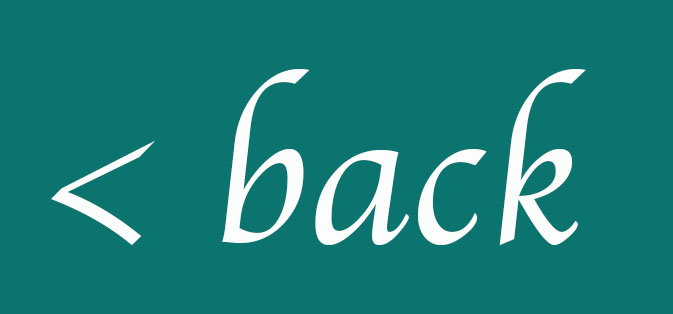

Ingredients:
150 ml of prepared aquafaba
200 grams almond flour
200 grams confectioners' sugar
Food coloring (optional)
200 grams (1 cup) of white sugar
60 ml (1/4 cup) water
Method:
1. Drain the water from a large can of chickpeas into a small sauce pan. Simmer the liquid until it reduces slightly and reaches a consistency similar to egg whites. Measure out 150 ml and set it aside to cool to room temperature. If you have more than 150ml, you can put the rest in the fridge and save it for another recipe.
2. Sift the almond flour and confectioners sugar into a large bowl. You may have to work in batches, using a rubber spatula to push the mixture through. Once you've sifted it all, give it a whisk and make sure it is evenly blended.
3. Pour 75ml of the aquafaba into the bowl of your stand mixture and set aside.
4. Stir your food coloring into the leftover aquafaba and pour it over the almond flour and confectioners' sugar mixture. Mix thoroughly with a rubber spatula until the mixture is completely even. Set this mixture aside.
5. In a small saucepan, combine the sugar and water and bring it to a boil over medium heat. Bring the temperature of this mixture up to 245F. This can take several minutes but keep a close eye on it because you don't want it to overheat.While the sugar is heating up, whip the aquafaba on medium-high speed until they form medium-firm peaks then turn the speed down to low.
6. Once the sugar has reached 245F, remove it from the heat and pour it into the mixer carefully. It might splatter a bit, but don't worry about it. Do not scrape down the bowl. Once you've poured it all in, turn the speed up to high and beat it for approximately 8-10 minutes. The mixture will be glossy and fluffy.
7. Grab the bowl of almond mixture and then dump in the meringue. Give this a thorough stir, scooping and turning the mixture over until it is evenly mixed. When it is ready, the texture should be lava-like and fall off your spatula in thick ribbons.
Put half of the mixture into a pastry bag fitted with a ½ inch tip.
8. Squeeze the batter onto the silpat or parchment in 1.5 inch rounds. This may take some practice. The mixture will settle a bit, so don't worry if they are a bit uneven on top.
9. Once you've filled the tray, you need to remove any air bubbles. The best way to do this is to pick up the tray and drop it back on the counter. This is loud and obnoxious, but it works. Do it twice for good measure.
10. Refill the pastry bag and repeat the process until all the batter is portioned out.
11. Set the trays aside to set for an hour or so. A gentle fan blowing over the trays can help the process along. They are ready to bake when you can touch them gently without them sticking to your finger.Preheat the oven to 210F with the rack set to the middle. This number is a guideline, it may take some tweaking to get the temperature just right.
12. Bake the first tray for 30 minutes, turn off the heat and let them sit with the door closed for 15 minutes and then crack the door open and let them sit in the oven for another 15 minutes. At this point they should be dry on the outside and the edges. The bottom might be a little soft, so don't try to remove them right away. Instead, slide the silpat or parchment off the tray and allow them to cool.
13. Repeat the process with the second tray, making any temperature or time adjustments necessary.
14. Once they have cooled completely, match them up into pairs based on size.
15. Using a piping bag, fill one shell of the macaron with ganache or vegan buttercream and then top it with the other shell. Press them together gently.
16. Once you have filled all the macarons, wrap them in an airtight container and set them to child overnight in the fridge.
17. They should last about 4 days in the fridge.

|